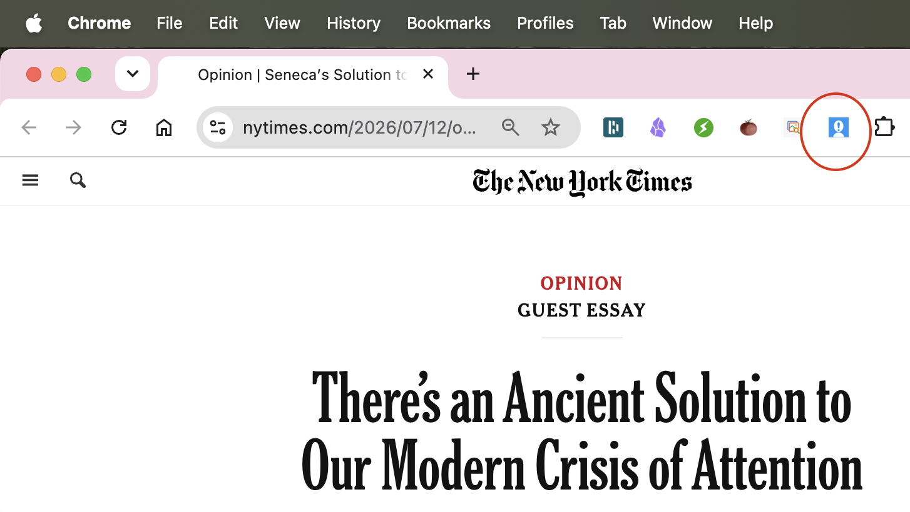

Who doesn't have a painfully long list in their lives? Whether it's Likes in a music app, or lists of to-do's, books to read or movies to watch, the sheer length of a list can be overwhelming.
But help is here! RouzMe moves you to actually do stuff. Use RouzMe to help you organize and track the ideas, goals, and interests you've had nagging at you.
Think of it as a way to keep track of all those things you say "I've been meaning to…" about.
The app helps you:
Pursuits are the main way to organize your ideas. Each pursuit represents a type of activity or interest.
Examples of Pursuits:
Within each pursuit, you add individual Ideas — the specific things you want to do. For example, in "Watch a Movie", you might add "The Godfather", "Blade Runner", or "Spirited Away".
You can share your Pursuits with others, or keep them private for your eyes only.
You can add links pointing to external resources for your Ideas. This makes it easy to jump directly to relevant content.
Supported link types:
When you add a link, the app will try to automatically fetch information like titles and descriptions. For some services (like movies and music), it can even find where content is available to stream.
Pro tip: Just paste a URL into the headline when adding a new Idea, and the app will handle the rest!
Perfect for recording ideas for articles to read, videos to watch, recordings to play, or anything else you come across in the wild world online. Once you send something to RouzMe, it will help you keep it as an Idea.
"Sending something" is a little different if you're on mobile (phone, pad) or in a browser. On mobile, you use the device's Share feature. Most apps will have this icon somewhere: . Tap that to start the process, then find and tap the RouzMe icon.
In a browser, the "Send to RouzMe" browser extension does the same from any web page. Get the extension for Chrome here, which will land the RouzMe icon () to the right of the address bar:

Either way, RouzMe will start a new Idea from the shared material. Then you can edit the Idea to suit (change the title, add a note reminding you why it's there, choose the pursuit to keep it under...), then hit Create to save it for posterity.
Already have a list of things you've been meaning to do? You can import them in bulk from other sources.
How to import:
Supported import formats:
This is perfect if you're migrating from another app or have been keeping lists in spreadsheets. Import hundreds of items at once instead of entering them one by one!
Example Formats
Plain text (a bare URL on a line has its title fetched automatically):
Movie Title 1
Movie Title 2
https://www.justwatch.com/us/movie/inceptionJSON (one item per line):
{"title": "Inception", "link": "https://www.justwatch.com/us/movie/inception"}
{"title": "The Matrix", "link": "https://www.justwatch.com/us/movie/the-matrix"}JSON array:
[{"title": "Inception"}, {"title": "The Matrix", "link": "https://www.justwatch.com/us/movie/the-matrix"}]Markdown links:
[Inception](https://example.com/inception)
[The Matrix](https://example.com/matrix)HTML links:
<a href="https://www.justwatch.com/us/movie/inception">Inception</a>
<a href="https://www.justwatch.com/us/movie/the-matrix">The Matrix</a>If you want to share your accumulated wisdom, you can let anyone see (but not change!) any of your Pursuits. Here's how:
PS: To manage your shares, both incoming and outgoing, hit the "Shared With Me" item on the main menu (top right).